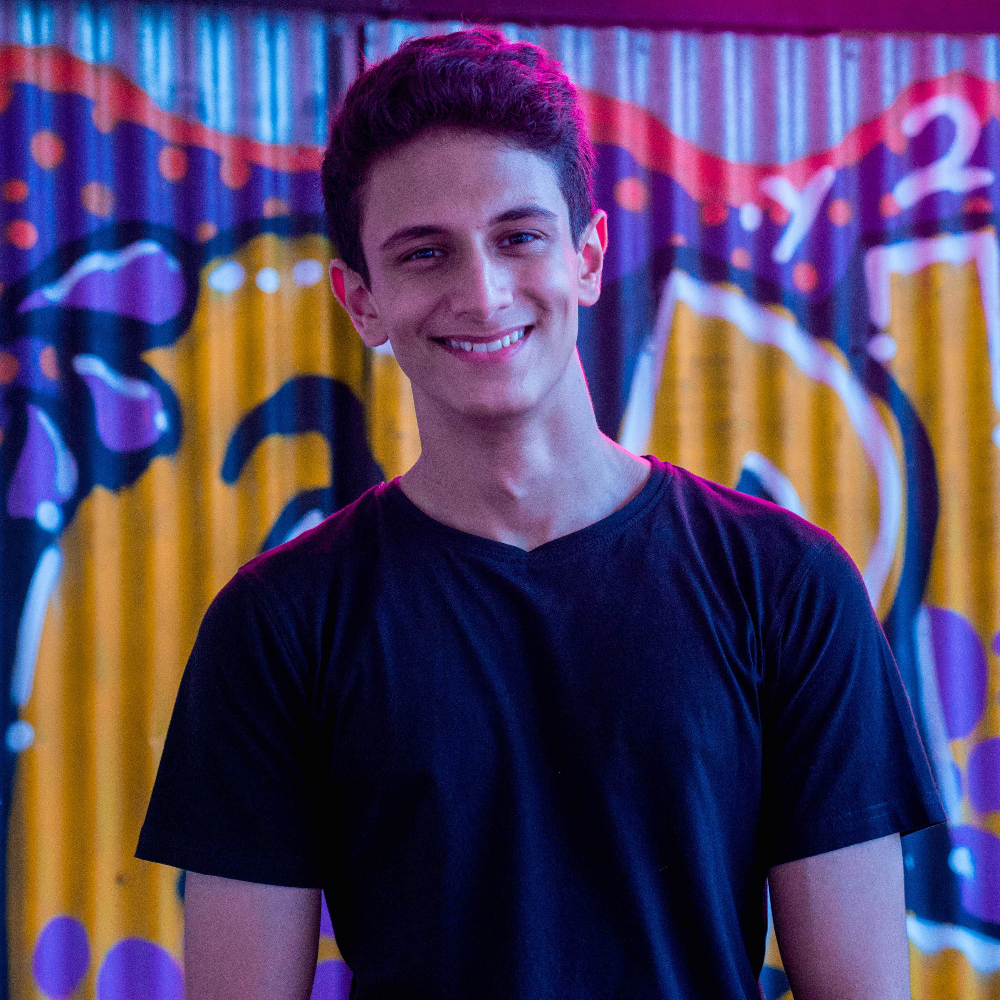

High school junior in Singapore. Into machine learning, mathematics, music and philosophy. 🇸🇬
I love making cool things. I fell into machine learning 2 years ago via Questo and have been exploring the space ever since.
Let's have a cool conversation! I love talking to developers, musicians, philosophers, just anyone interesting! HMU here:
I'm currently
- building a few cool projects
- studying CS, Math & Philosophy in high school
- playing Jazz (tenor sax) in Singapore
What I've done
- Questo (2016-now) — an app that lets students generate test questions from a picture of a textbook. Got ~1200 users via closed beta runs. Featured #1 Product of the Day on Product Hunt (11/2/19). Featured at #1 on Hacker News. Won top prize from IBM at the Singapore Fintech Festival 2016.
- Photonify (2017-now) — an app that helps you take the perfect photo every time. Competed against ~400 participants to win $40,000 "Most Creative" prize at Startup Weekend 2017.
- Bookworm (2018) — software that uses CV to let you interact with real, paper books like digital objects. Competed against ~600 participants to win "best pre-university hack" at NUS hacknroll 2019--the biggest student hackathon in Singapore.
- Hequals (2017) — an automated task allocator that aims to eliminate discrimination in the tech industry by basing decisions purely on skills. Won "best pre-university hack" at #Codeathon 2017 Asia, a competition run across three countries.
- (2018) freelanced web / backend development & consulted for clients in Asia.
Other stuff I've done
- co-led ideaHacks 2018 — led organising team of one of Singapore's only hackathons for high-schoolers. Hosted ~90 participants, worked with sponsors Acronis and Carousell.
- wrote some bits on recent developments in AI
- secured funding from Google and IBM to conduct research and develop Questo.
- playing saxophone for 5-6 hours every week. Love meeting musicians in Singapore, improvising, studying theory of funk / jazz.